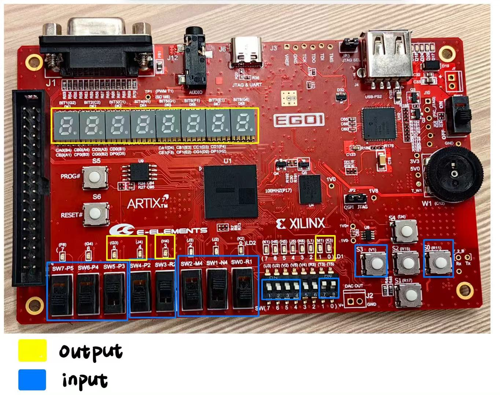
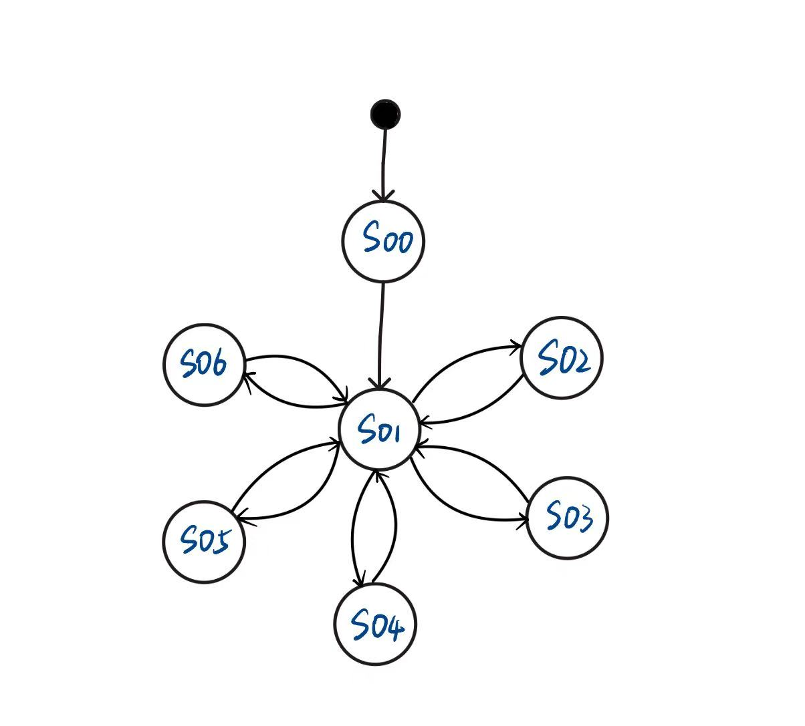

Architecture Design Document
小组成员：
刘以煦 12410148
邵浩林 12413323
何成卓 12411443

- SW7, SW6, SW5 用作
主菜单选择, SW7为MSB，SW5为LSB
- SW4，SW3用作
设置选择,SW4为MSB，SW3为LSB
- SW2, SW1, SW0 用作
运算选择, SW2为MSB，SW0为LSB
- SW(7), SW(6), SW(5), SW(4)用作
标量乘法输入, SW(7)为MSB，SW(4)为LSB
- SW(1)用作
set_Uart_tx_work
- SW(0)用作
set_Uart_rx_work
- S3用作
确认
- S0用作
发送
2. Output device
七位数码显示管
-
DK1用作展示目前在哪一主功能
- 矩阵输入及存储(I)
- 矩阵生成及存储(G)
- 矩阵展示(D)
- 矩阵运算(O)
- 设置(S)
-
DK4用作目前在哪一种运算方式
- 矩阵转置(T)
- 矩阵加法(A)
- 矩阵标量乘法(B)
- 矩阵乘法(C)
- 卷积(J)
-
DK7,DK8用作倒计时。DK7为MSB，DK8为LSB
LD2
- LED5用作input错误检测：超出维度范围
- LED4用作input错误检测：超出矩阵元素的数值范围
- LED3用作operate错误检测：运算数不合规
LD1
- LED1用作显示set_Uart_tx_work
- LED0用作显示set_Uart_rx_work
Part2. Describe the structure of the project
matrix_calculator/ # 顶层模块 (包含主 FSM)
│
├── uart/ # UART 系统
│ ├── uart_communicator # UART 收发
│ └── uart_parser # ASCII→整数解析
│
├── storage/ # 全局矩阵存储系统
│ └── matrix_storage_manager # 矩阵存储+覆盖策略
│
├── inputer_sys/ # 输入矩阵子系统
│ ├── inputer # 处理输入→写入存储
│ └── input_validator # 维度/数值范围/数量验证
│
├── generator_sys/ # 随机矩阵生成子系统
│ └── generator # 用户指定 m,n,k → 随机矩阵
│
├── displayer_sys/ # 主菜单矩阵展示
│ └── displayer # 展示所有矩阵
│
├── settings_sys/ # 动态配置模块（Bonus）
│ ├── settings # 总控 FSM
│ ├── x_settings # 每规格矩阵数量上限
│ ├── timer_settings # 倒计时秒数（5~15）
│ └── validate_num_range_settings # 元素范围（默认 0–9）
│
├── operator_sys/ # 矩阵运算模块（最复杂）
│ │
│ ├── operator # 运算主 FSM：选择→验证→倒计时→计算
│ │
│ ├── info_display/ # 运算菜单展示模块
│ │ ├── brief_displayer # 显示矩阵总数+规格列表
│ │ ├── dimension_displayer # 显示指定尺寸所有矩阵
│ │ └── random_selector # 随机选择运算数/随机标量
│ │
│ ├── validators/ # 运算合法性验证
│ │ ├── adder_validator
│ │ ├── multiplexer_validator
│ │ └── convoluter_validator # Bonus
│ │
│ ├── calculators/ # 具体计算模块
│ │ ├── translator # 矩阵转置
│ │ ├── adder # 矩阵加法
│ │ ├── scalar_multiplexer # 标量乘法
│ │ ├── multiplexer # 矩阵乘法
│ │ └── convoluter # 卷积 Bonus
│ │
│ └── timer # 倒计时（数字管、timeout_flag）
│
└── top-level functional glue put in matrix_calculator
flowchart TD
%% ========== Top ==========
TOP[matrix_calculator<br>Top-Level + Main FSM]
%% ========= inputer ============
TOP --> INP[inputer<br>矩阵输入模块]
INP --> INP_PARSE[uart_parser]
INP --> INP_VALID[input_validator]
INP --> STORE[matrix_storage_manager<br>GLOBAL]
%% ========= generator ============
TOP --> GEN[generator<br>矩阵生成模块]
GEN --> STORE
%% ========= displayer ============
TOP --> DISP[displayer<br>矩阵展示模块]
DISP --> STORE
%% ========= operator ============
TOP --> OP[operator<br>矩阵运算模块]
OP --> OP_FSM[运算模式 FSM & 控制器]
OP --> STORE
%% --- operator internal modules ---
OP --> TR[translator<br>转置]
OP --> ADD[adder<br>加法]
ADD --> ADDV[adder_validator]
OP --> SCALAR[scalar_multiplexer<br>标量乘法]
SCALAR --> SCALARV[scalar_mul_validator]
OP --> MUL[multiplexer<br>矩阵乘法]
MUL --> MULV[multiplexer_validator]
OP --> CONV[convoluter<br>卷积模块]
CONV --> CONVV[convoluter_validator]
OP --> OBD[brief_displayer<br>展示矩阵总数及大小]
OP --> ODD[dimension_displayer<br>展示选定尺寸的矩阵]
OP --> RAND[random_selector<br>自动选矩阵]
OP --> TIMER[timer<br>倒计时模块]
%% ========= settings ============
TOP --> SET[settings<br>设置模块]
SET --> XS[x_settings<br>矩阵数量上限]
SET --> TS[timer_settings<br>倒计时配置]
SET --> VS[validate_num_range_settings<br>元素范围]
%% ========= uart_communicator ============
TOP --> UART[uart_communicator<br>UART 输入/输出模块]
UART --> INP
UART --> GEN
UART --> OP
UART --> DISP
Top-level module
| Module name |
Input ports |
Output ports |
Function |
| matrix_calculator |
clk, rst, sw_mode[x], btn_confirm, uart_rx |
uart_tx, led_err, seg7_sel, seg7_data |
顶层模块，包含主 FSM，负责模式切换并管理所有子模块信号路由 |
Global Storage Module
| Module name |
Input ports |
Output ports |
Function |
| matrix_storage_manager |
clk, rst, write_en, write_data, read_req |
read_data, stored_count, spec_list |
全局矩阵存储器，统一管理数据并支持覆盖策略，供所有模块访问 |
UART Modules
| Module name |
Input ports |
Output ports |
Function |
| uart_communicator |
clk, rst, uart_rx |
uart_tx, rx_byte, rx_data_ready |
UART 收发模块，处理串口助手之间的数据通信 |
| uart_parser |
clk, rst, rx_byte, rx_data_ready |
parsed_value, parsed_valid |
将 ASCII 字符解析为整数，供 inputer/generator/operator 使用 |
| Module name |
Input ports |
Output ports |
Function |
| inputer |
clk, rst, parsed_value, parsed_valid, btn_confirm |
write_en, write_data, led_err |
处理用户输入矩阵，经验证后写入全局存储器 |
| input_validator |
dim_in, element_in, cfg_range_min, cfg_range_max |
valid_flag |
检查维度合法性、元素范围、数量不足或超出等情况 |
Generator Subsystem
| Module name |
Input ports |
Output ports |
Function |
| generator |
clk, rst, parsed_value(m,n,k), btn_confirm |
write_en, write_data |
根据用户指定的 m×n 和数量 k 生成随机矩阵并保存 |
Displayer Subsystem
| Module name |
Input ports |
Output ports |
Function |
| displayer |
clk, rst, read_req |
uart_tx_data |
展示所有存储矩阵（格式化输出），用于 UART 显示 |
Settings Subsystem
| Module name |
Input ports |
Output ports |
Function |
| settings |
parsed_value, btn_confirm |
cfg_x, cfg_range_min, cfg_range_max, cfg_timer |
设置所有动态参数（矩阵数量上限、元素范围、倒计时） |
| x_settings |
parsed_value |
cfg_x |
设置每种规格矩阵的最大存储数量（默认 2） |
| timer_settings |
parsed_value |
cfg_timer |
设置倒计时秒数（5–15 秒） |
| validate_num_range_settings |
parsed_value |
cfg_range_min, cfg_range_max |
设置矩阵元素合法范围（默认 0–9） |
Operator Subsystem
| Module name |
Input ports |
Output ports |
Function |
| operator |
clk, rst, parsed_value, parsed_valid, sw_op_type, btn_confirm |
uart_tx_data, led_err, seg7_sel, seg7_data |
运算主控模块，包含运算 FSM，负责选择运算类型、验证、倒计时、调用计算模块并输出结果 |
Operator 辅助模块
a. Matrix Information Modules
| Module name |
Input ports |
Output ports |
Function |
| brief_displayer |
stored_count, spec_list |
uart_tx_data |
显示矩阵数量与规格列表（如 3 221 452） |
| dimension_displayer |
dimension(m,n), stored_matrices |
uart_tx_data |
展示所有 m×n 规格矩阵及其编号，供用户选择 |
| random_selector |
stored_matrices_info |
rand_opA, rand_opB |
随机合法选择运算数；标量乘法生成 0–9 的随机标量 |
b. Validators
| Module name |
Input ports |
Output ports |
Function |
| adder_validator |
dimA, dimB |
valid_add |
判断加法维度是否一致 |
| multiplexer_validator |
dimA, dimB |
valid_mul |
判断矩阵乘法的维度是否符合规则 |
| convoluter_validator |
kernel_dim, image_dim |
valid_conv |
判断卷积核与图像尺寸是否满足条件（Bonus） |
c. Calculation Modules
| Module name |
Input ports |
Output ports |
Function |
| translator |
matrix_A |
matrix_AT |
进行矩阵转置 |
| adder |
matrix_A, matrix_B |
matrix_C |
执行矩阵加法 |
| scalar_multiplexer |
matrix_A, scalar_x |
matrix_C |
执行标量与矩阵的乘法 |
| multiplexer |
matrix_A, matrix_B |
matrix_C |
执行矩阵乘法 |
| convoluter |
image_matrix, kernel_matrix |
result_matrix |
执行 2D 卷积（Bonus） |
d. Timer Module
| Module name |
Input ports |
Output ports |
Function |
| timer |
clk, rst, cfg_seconds |
timeout_flag, seg7_sel, seg7_data |
实现倒计时，用于输入错误后的重新选择 |
Part3. FSM of the project
1. List the states in your project
主菜单 FSM
| State id |
State name |
Meaning |
| 00 |
S_IDLE |
系统上电，内部寄存器初始化 ，稳态后进入菜单 |
| 01 |
S_MENU |
主菜单界面（通过拨码开关选择 1–5 功能） |
| 02 |
S_INPUTER |
矩阵输入模式 |
| 03 |
S_GENERATOR |
矩阵生成模式 |
| 04 |
S_DISPLAYER |
展示所有矩阵 |
| 05 |
S_OPERATOR |
进入矩阵运算模式 |
| 06 |
S_SETTINGS |
设置模式 |
矩阵运算 FSM
| State id |
State name |
Meaning |
| 00 |
OP_IDLE |
运算模式初始状态 |
| 01 |
OP_CHOOSE_TYPE |
用户用拨码选择运算类型（T/A/B/C/J） |
| 02 |
OP_SHOW_BRIEF |
brief_displayer 输出矩阵数量和规格列表 |
| 03 |
OP_GET_DIMENSION |
输入运算矩阵维度 (m,n)（若手动选择） |
| 04 |
OP_SHOW_DIM_LIST |
显示所有指定维度的矩阵列表 |
| 05 |
OP_GET_OPERAND_A |
用户选择第一个运算数 |
| 06 |
OP_GET_OPERAND_B |
用户选择第二个运算数（加法/乘法） |
| 07 |
OP_GET_SCALAR |
若为标量乘法：输入标量或随机生成 |
| 08 |
OP_VALIDATE |
adder/mul/convolution validator 进行合法性检查 |
| 09 |
OP_TIMER |
运算数不合法 → 进入倒计时状态 |
| 10 |
OP_COMPUTE |
调用计算模块进行矩阵运算 |
| 11 |
OP_SHOW_RESULT |
将结果通过 UART 输出 |
| 12 |
OP_NEXT_STEP |
用户决定继续当前运算/换运算类型/返回主菜单 |
2. Draw the state transition diagram to show the state transmit from one to another
主菜单 FSM

stateDiagram-v2
[*] --> S_IDLE
S_IDLE --> S_MENU : rst done
S_MENU --> S_INPUTER
S_MENU --> S_GENERATOR
S_MENU --> S_DISPLAYER
S_MENU --> S_OPERATOR
S_MENU --> S_SETTINGS
S_INPUTER --> S_MENU
S_GENERATOR --> S_MENU
S_DISPLAYER --> S_MENU
S_OPERATOR --> S_MENU
S_SETTINGS --> S_MENU
矩阵运算 FSM
stateDiagram-v2
[*] --> OP_IDLE
OP_IDLE --> OP_CHOOSE_TYPE : enter operator mode
OP_CHOOSE_TYPE --> OP_SHOW_BRIEF : btn_confirm
OP_SHOW_BRIEF --> OP_GET_DIMENSION : manual select
OP_SHOW_BRIEF --> OP_GET_OPERAND_A : random select
OP_GET_DIMENSION --> OP_SHOW_DIM_LIST : btn_confirm
OP_SHOW_DIM_LIST --> OP_GET_OPERAND_A : choose matrix A
OP_GET_OPERAND_A --> OP_GET_OPERAND_B : type = add/mul
OP_GET_OPERAND_A --> OP_GET_SCALAR : type = scalar
OP_GET_OPERAND_A --> OP_VALIDATE : type = transpose/convolution
OP_GET_OPERAND_B --> OP_VALIDATE : btn_confirm
OP_GET_SCALAR --> OP_VALIDATE : btn_confirm
OP_VALIDATE --> OP_COMPUTE : valid
OP_VALIDATE --> OP_TIMER : invalid
OP_TIMER --> OP_GET_OPERAND_A : fixed in time
OP_TIMER --> OP_GET_OPERAND_B : if type = add/mul
OP_TIMER --> OP_RETURN : timeout
OP_COMPUTE --> OP_SHOW_RESULT
OP_SHOW_RESULT --> OP_NEXT_STEP
OP_NEXT_STEP --> OP_CHOOSE_TYPE : continue same mode
OP_NEXT_STEP --> S_MENU : return main menu